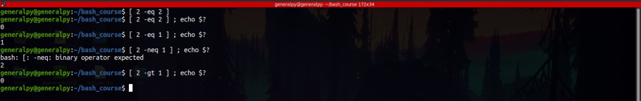
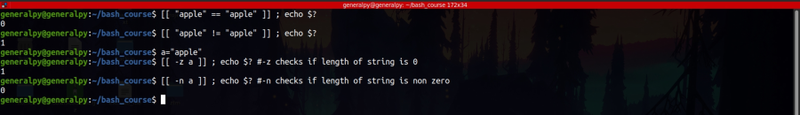
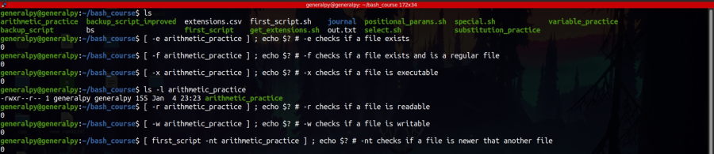
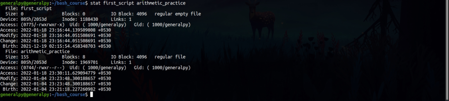

We can perform logcal tests using test command or square brackets.
test conditions
[ conditions ]
[[ conditions s]]
Above 3 syntaxes can be used to test logical conditions.
Testing returns either 1 or 0 with 0 being success or true and 1 meaning false unlike other programming languages.
There are multiple operators used for testing conditions with operaters differing for each entity, they are different for string, integer and files etc.
$? stores exit code of last command.

Integers are compared with operators such as -eq(equal), -gt(greater than), -lt (less than) etc.

When comparing strings it is advisable to enclose string variable in quotes and to use double square bracket syntax when comparing strings. If using single square brackets, use = instead of ==.
Let's look at some file operators.

